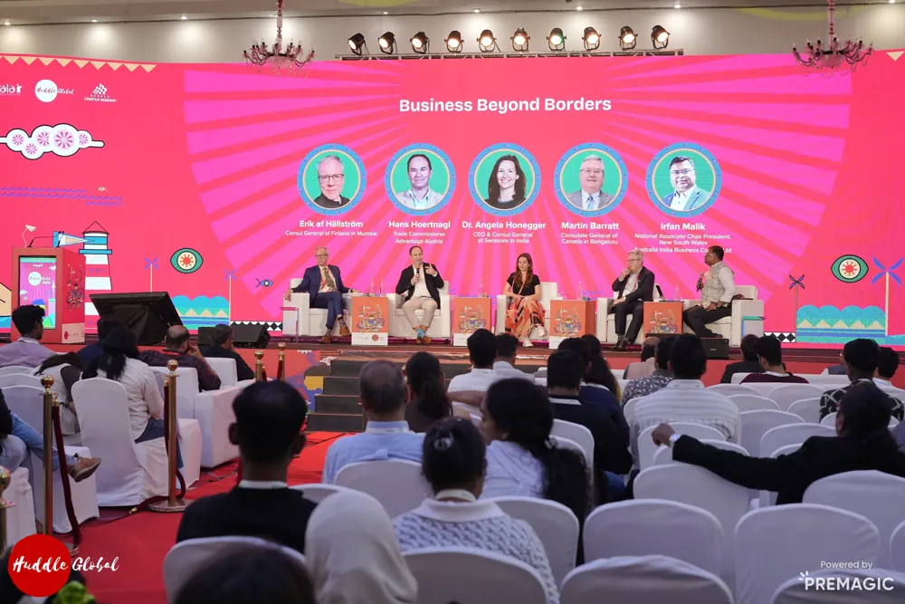

Build interest
Announcements, speaker stories, and registration campaigns planned with the team.
Campaign / 2022-2025
Bringing Kerala's startup festival to social feeds, media, and founder communities through campaign planning, live coverage, creative coordination, and PR support.

My contribution
Announcements, speaker stories, and registration campaigns planned with the team.
Coordinated social coverage, creative assets, and timely updates.
Event moments shaped into recaps, press communication, and follow-up stories.
July - December 2025
Organic storytelling, live event coverage, and targeted paid promotion supported awareness and participation throughout the Huddle Global 2025 campaign.
| Platform | Posts | Reach | Views / impressions | Engagement |
|---|---|---|---|---|
| Meta (Facebook & Instagram) | 224 | 80,192 users | Not reported | 2,739 content interactions |
| 229 | 743,923 | 1.85M views | 19,109 content interactions | |
| 231 | Not reported | 572,488 impressions | 30,979 link clicks |
The report lists Meta and Instagram separately. Figures retain those labels and are not added together; reach, views, impressions, interactions, and clicks are distinct measures.
API-enabled updates shared promotional offers, reminders, and live announcements with registered participants and ecosystem stakeholders. No numerical engagement figure was supplied.
Huddle Global 2025 / PR
Press outreach before, during, and after the event supported coverage of announcements, partnerships, funding, and technology showcases.
A pre-event press meet brought together major media houses, including Mathrubhumi, Malayala Manorama, and The Hindu, with the IT Secretary and KSUM speakers.
Coverage included The Hindu, The Economic Times, Financial Express, Business Line, Malayalam dailies, and startup and business portals.
The report names Kairali TV, India Today Malayalam, and Press One among television outlets, alongside features on verified media social channels.
Campaign-wide figures from the supplied report; coverage categories may overlap. The detailed newswire breakdown records 20+ releases through PTI, UNI, and ANI.
2023 campaign results
Historical Huddle Global 2023 campaign totals.
Social archive
Public campaign examples from KSUM and Huddle Global.
An Onam-season ticket promotion connected the festival with a timely registration incentive: 60% off until 30 August 2023.
View the postPublic repost by Anooja Bashir, including KSUM's original creative.KSUM's roadshow recap brought together Kochi, Trivandrum, and Calicut, with a clear invitation to register.
View KSUM's postHuddle Global's event recap revisited founder stories, conversations, and community connections.
View Huddle's postWatch